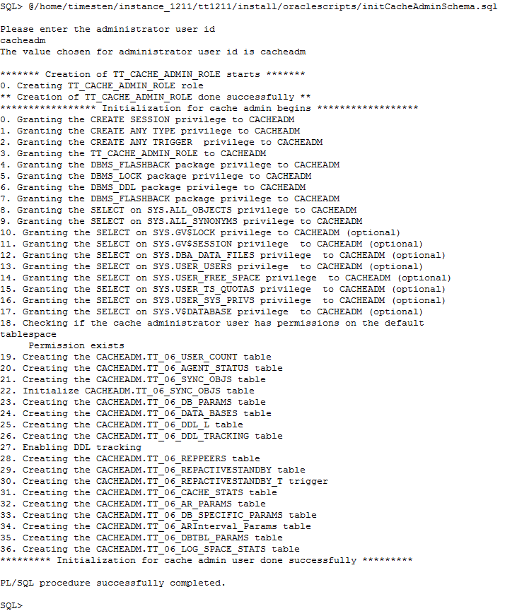
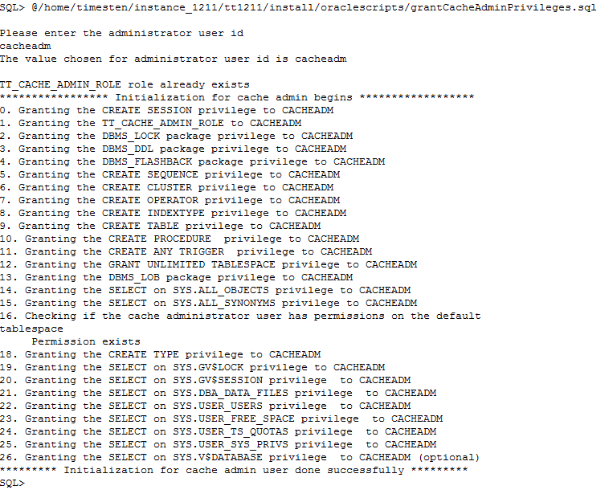

Before you can cache tables from an Oracle database into TimesTen Application-Tier Database Cache (TimesTen Cache), a cache administration user and TimesTen system tables must be created in the Oracle database. A cache administration user is an Oracle user that tracks the changes between the Oracle database and the TimesTen Cache database. This user must be granted sufficient privileges so that he can create triggers and have access to the Oracle data that are being cached.
1. Create a Tablespace in the Oracle Database
Using SQL*Plus, log into your Oracle database as the user SYS. In the example, we are using ttorcl as the TNS service name pointing to the Oracle database.
sqlplus sys@ttorcl as sysdba
Create a tablespace for managing all the TimessTen Cache objects.
create tablespace ttusers datafile 'ttusers.dbf' SIZE 40M;
2. Create a Cache Administration User in the Oracle Database
Create an Oracle account for the cache administration user. In this example, cacheadm is the cache administration user.
create user cacheadm identified by cacheadm
default tablespace ttusers
quota unlimited on ttusers
temporary tablespace temp;
3. Create the Cache objects in the Oracle database
Run the script initCacheAdminSchema.sql located in the <instance_dir>/install/oraclescripts directory to create the TimesTen schema in the Oracle database. The script prompts for the default tablespace for the cacheadm user. Enter cacheadm at the prompt.
@/home/timesten/instance/tt181/install/oraclescripts/initCacheAdminSchema.sql

Note: Copy this initCacheAdminSchema.sql script to Oracle database accessible directory.
4. Grant System Privileges to the Cache Administration User
Run the script <instance_dir>/install/oraclescripts/grantCacheAdminPrivileges.sql to grant the necessary privileges to the cache administration user. The script prompts for the user name of the cache administration user. Enter cacheadm at the prompt.
@/home/timesten/instance/tt181/install/oraclescripts/grantCacheAdminPrivileges.sql

Note: Copy this grantCacheAdminPrivileges.sql script to Oracle database accessible directory.
5. Grant Data Access Privileges to the Cache Administration User
The cache administration user is responsible for monitoring, and applying the data changes between the cache database and the Oracle database. This user needs to be granted access privileges to the Oracle tables being cached.
In our example, which we will see in the succeeding tutorials, the hr.departments table will be cached as a read-only table, while the tables hr.employees and hr.job_history will be cached as updatable tables. Once you installed the HR sample schema, log in as the user hr and grant the following object privileges to cacheadm.
connect hr@ttorcl
grant select on hr.departments to cacheadm;
grant select, insert, update, delete on hr.employees to cacheadm;
grant select, insert, update, delete on hr.job_history to cacheadm;
Click here to learn how to setup up a cache database.
For more information about configuring the Oracle database to cache data in TimesTen refer to the documentation here